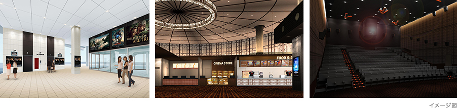

下関駅に隣接したシーモール下関の新設シネマ棟２階に８スクリーン、総座席数1,103席のシネマサンシャイン下関が７月５日（土）にオープンいたします。
8スクリーンすべてが3Dデジタルに対応しており、うち１スクリーンには中国地方初となる最新音響システム“DOLBY ATMOS”を採用。
あなたの感覚を刺激する映画体験をシネマサンシャイン下関で体験してください。
ドルビー社の最新音響システム“ドルビーアトモス”は、自然でリアルな音場を実現し、より感覚を刺激する映画体験を可能にします。 スクリーン前までサイド・サラウンド・スピーカーを設置することで客席を360°取り囲み、音の移動がスムーズに感じられます。さらに天井にもサラウンド・スピーカーを設置することで、これまでにないシネマサウンドをご体験いただけます。